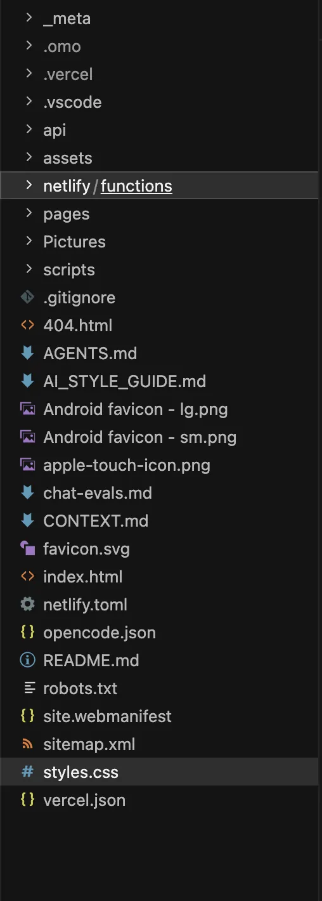
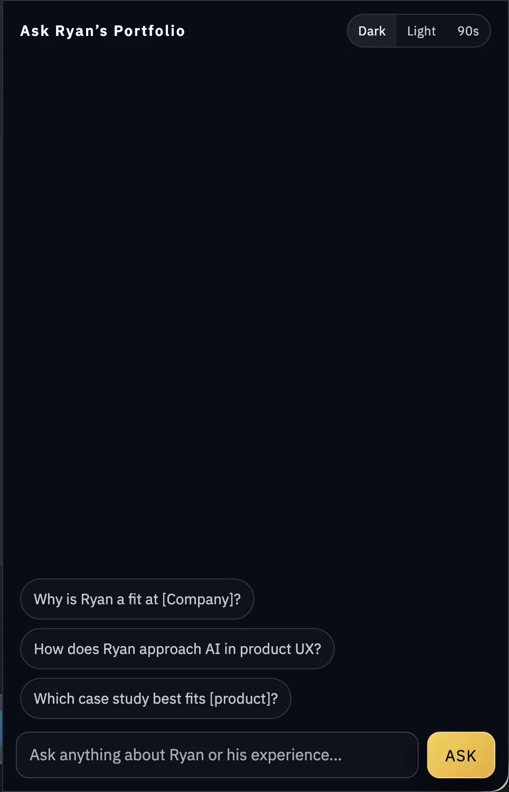
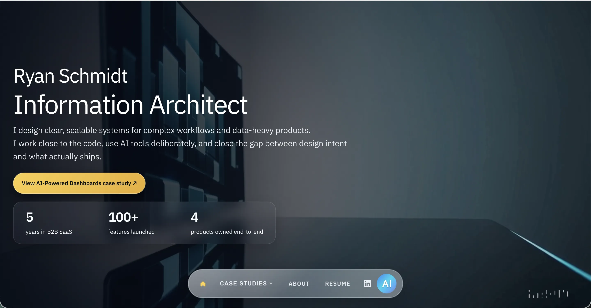
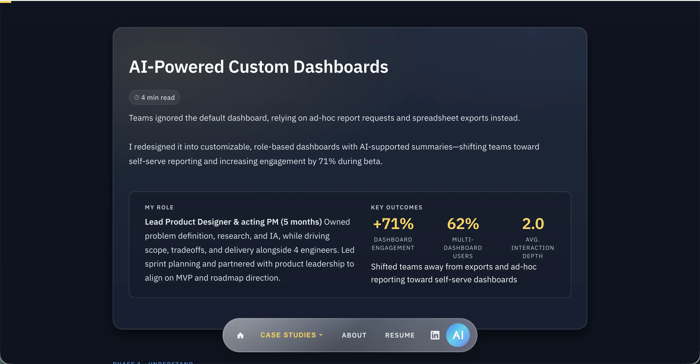
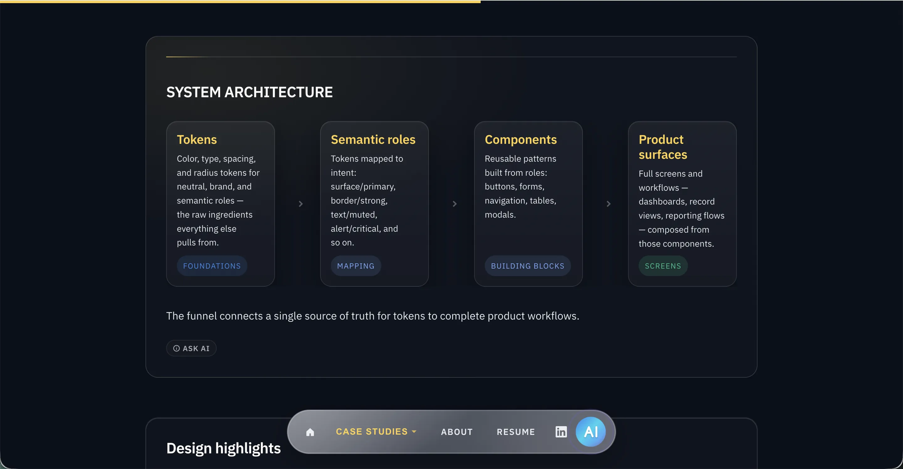

Engineering an AI-Native Portfolio
I built this portfolio directly in HTML, modular CSS, and JavaScript using Cursor. Prototyping in working code lets me explore layout behavior, keyboard interaction, and performance constraints in the browser long before an engineering sprint.
At a glance
- The Goal: Evaluating interactive ideas in static Figma files hides layout breaks and subtle ergonomic friction. I wanted to build the entire site in code to sharpen my UX engineering workflow and ship without an engineering bottleneck.
- How I Built It: Wrote custom semantic HTML and modular CSS with Cursor, avoiding bloated templates or heavy frontend frameworks. I built a serverless backend with Supabase and pgvector so visitors could ask questions and get accurate answers from my actual project data.
- The Result: A lightweight, fast site with a custom design token architecture, a grounded AI search assistant (Gemini + Supabase pgvector), and a front-end prototyping process I now use on production features at work.
Problem
I do my best work when I'm close to the implementation. Sitting between Figma and an IDE helps me spot technical constraints early, speak the same language as our engineers, and avoid designing interactions that are nightmares to maintain in production.
Rather than putting static screenshots in a CMS template, I built this portfolio from scratch to test modern AI-assisted engineering tools in a real project.
Designing directly in code meant I was evaluating typography, keyboard navigation, and responsive reflow under actual browser rendering conditions from day one.
What I set out to do
- Move directly from an interaction idea into working code in a few hours
- Create a clean token hierarchy that keeps styles modular across multiple pages
- Build a useful AI chat assistant anchored in real project data, not generic marketing fluff
- Keep the site lightweight, accessible, and fast enough to score 98+ on Google Lighthouse
Approach
I barely opened Figma for this rebuild, except to check a few hex codes. Designing directly in CSS forces you to reckon with real browser constraints: layout shifts, font loading, keyboard focus states, and how elements wrap on mobile screens.
- Cursor: My day-to-day coding environment for writing markup, styling tokens, and frontend scripts
- Vercel & Supabase: Serverless deployment, vector search, and edge caching
The biggest takeaway was that AI tools are only as good as the guardrails you give them. When you establish clear tokens and layout rules upfront, AI acts as a reliable accelerator for boilerplate code rather than generating messy overrides.
System architecture
I treated the codebase like a design system from day one: defining tokens first, standardizing layout grids, and reusing markup patterns across all four case studies so every new section snapped into place cleanly.
Prompts
Clear, constrained instructions defining what to build and how
FoundationPatterns
Reusable prompt structures for common UI and interaction problems
StructureComponents
Reusable elements like navigation, cards, layouts, and sections
Building blocksFeatures
Full experiences including case studies and interactive elements
ShippedThe system connects structured prompts to real product features, not just generated code.
Interactive walkthrough
See how the system works
Watch a visitor question travel through the portfolio assistant, from input to structured, context-aware answer, at your own pace.
What has Ryan built related to AI?
User submits question from the chat widget
Orchestrator
Receives question, checks tools needed, routes to RAG
- Parse question intent
- Check portfolio context
- Route to knowledge retrieval
- Format system prompt
Supabase pgvector
Searches 1,400+ embedded project chunks for context
Gemini 2.5 Flash
Generates answer from retrieved context + system prompt
Ryan has built an AI-powered portfolio assistant that uses RAG to answer visitor questions in real time. The system combines a Supabase vector store with Gemini 2.5 Flash to provide structured, context-aware responses about his product design work, systems thinking approach, and builder experience.
Ready Type a question or use the default prompt, then run the walkthrough.
Building the system
Designing directly in the browser
Figma is great for team alignment, but jumping straight into HTML and CSS cut out an entire layer of translation lag. I could resize my browser window, test keyboard navigation, and check contrast under real rendering conditions instead of pretending static mockups told the whole story.


Setting ground rules before writing code
If you do not give an AI coding tool strict rules, it will happily invent new CSS classes on every prompt and pad your copy with corporate fluff. Before writing code, I set up explicit project guidelines in local markdown files (CONTEXT.md and AGENTS.md). These defined my tone preferences, banned resume buzzwords, and set hard standards for keyboard accessibility and semantic HTML.
Keeping the CSS modular
The fastest way for an AI-assisted codebase to turn into an unmaintainable mess is letting it write styling rules wherever it wants. I split the stylesheets into clear layers: tokens for colors and spacing, base styles for typography, layout files for grids, and component files for interactive widgets (tokens.css, base.css, layout.css, components.css, pages.css). That kept our CSS clean, prevented styling collisions, and kept page load times under 300ms.
Implementation highlights
- A consistent case study template that lets readers scan decisions quickly
- Reusable layout patterns and components across every page
- An AI chat widget connected to semantic search for hiring managers who want quick answers
- Semantic HTML, ARIA landmarks, and SEO metadata baked directly into the templates
The result was a fast, accessible portfolio that behaves like a real product surface rather than a static brochure.
Here is a look at the previous version of this portfolio (hand-built, static HTML) compared to the current rebuild.



Making the AI Assistant Useful
The first version of my portfolio assistant shoved an entire 40KB JSON file into every single API call. It was simple to set up, but it was inefficient and blew through token limits the second someone asked a nuanced question.
I rebuilt the backend around Supabase and pgvector. Now, every case study and project note is broken into small chunks and indexed using Gemini embeddings. When a recruiter or visitor asks a question, the backend retrieves only the three or four most relevant paragraphs before generating an answer.
Getting the tone and accuracy right took plenty of testing. I had to set strict boundaries so the bot would decline questions outside my background, stream answers smoothly without lag, and track resume downloads so I know what hiring managers care about most.
Impact
The portfolio runs on plain HTML, modular CSS, and vanilla JavaScript without any heavy framework or template bloat. Every page loads in under 300ms, passes accessibility audits, and shares the same design tokens.
The biggest advantage is rapid validation. When I want to test a layout idea or micro-interaction, I can build a working prototype in an afternoon, run it on a phone, and see if the ergonomics actually work.
What Didn't Work
Early on, I went down a rabbit hole building multiple visual skins, including a dark mode and a retro Windows 95 theme (alongside the terminal mode). While they were fun technical experiments, maintaining three separate color palettes and border conventions tripled CSS token maintenance and distracted from the case studies themselves.
I stripped the site back to a single high-contrast light theme to keep the design system maintainable and focused on content clarity. The lesson was straightforward: just because AI makes generating code fast doesn't mean you should keep every feature you prototype.
Lessons & Next Steps
Lessons
AI coding tools do not replace good software practices. If anything, they punish you faster if you do not have a plan. Without clear architecture upfront, an LLM will happily hand you messy CSS and duplicate utility classes.
- Detailed system rules beat prompt hacking: Setting up explicit coding conventions and design tokens in markdown prevented messy rewrites later.
- Browser testing catches real-world friction: Inspecting live HTML and CSS revealed keyboard navigation quirks and awkward responsive wrapping that Figma never surfaced.
- Fast prototyping requires discipline: When coding is quick, it's easy to build unnecessary features (like the retro themes I ended up cutting). Knowing what to prune is the real job.
Next
- Fine-tune vector retrieval evaluation for more precise project citations in the chat widget
- Add lightweight code sandboxes for interactive case-study components